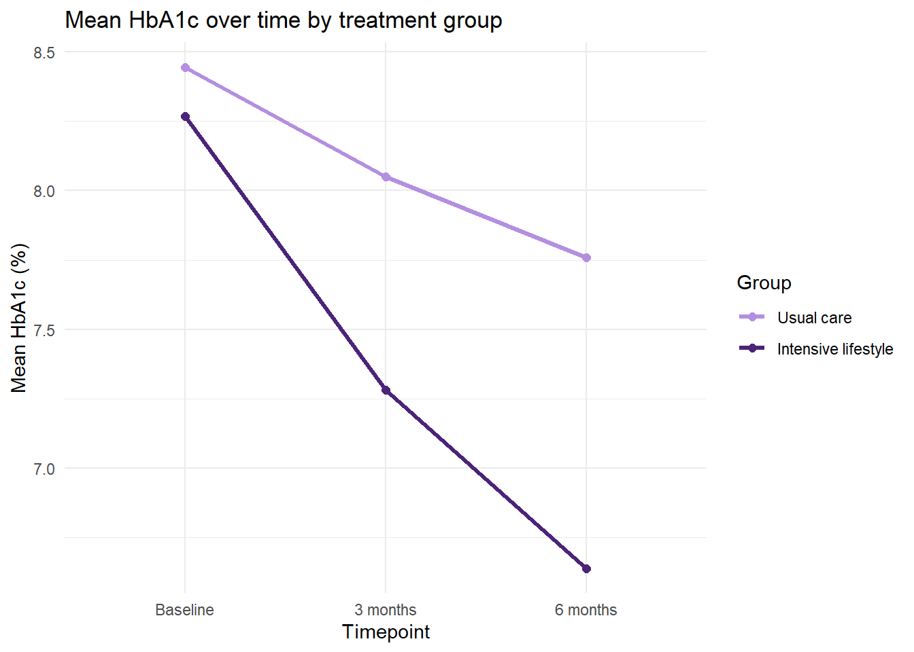

This page is for reading only: you can’t run code or save answers here. To work through the activities, open week-02-session-1-workbook.qmd in RStudio. It’s in the student pack you downloaded from the week page.
Before you start
In this session you’ll prepare a dataset from a six-month trial in 240 adults with type 2 diabetes. Each patient was in one of two groups: usual care (UC) or an intensive lifestyle programme (ILP). Their HbA1c, a measure of average blood glucose over the previous two to three months, and their weight were recorded at baseline, 3 months and 6 months. The data are simulated, but the problems in them are all ones you will meet in real datasets: the file was put together by several people, and it shows.
Work through the activities in order, running each chunk and writing your answers under the Your answer: prompts. Keep the Guide to R 03 open alongside; every function you need is explained there.
First, make sure this workbook and the week 2 data files are in your R_module project (the week 2 page explains how), and that the project is open: its name should appear at the top right of RStudio.
Second, install the one new package this session uses, janitor, by typing this in the Console:
install.packages("janitor")
Then run the chunk below to load the packages.
library(tidyverse)
── Attaching core tidyverse packages ──────────────────────── tidyverse 2.0.0 ──
✔ dplyr 1.2.1 ✔ readr 2.2.0
✔ forcats 1.0.1 ✔ stringr 1.6.0
✔ ggplot2 4.0.3 ✔ tibble 3.3.1
✔ lubridate 1.9.5 ✔ tidyr 1.3.2
✔ purrr 1.2.2
── Conflicts ────────────────────────────────────────── tidyverse_conflicts() ──
✖ dplyr::filter() masks stats::filter()
✖ dplyr::lag() masks stats::lag()
ℹ Use the conflicted package (<http://conflicted.r-lib.org/>) to force all conflicts to become errors
library(janitor)
Attaching package: 'janitor'
The following objects are masked from 'package:stats':
chisq.test, fisher.test
Activity 1: Load the data and take a first look
Run the chunk below. It imports the data, keeps it under a name that says it is untouched, and shows its size and structure.
Rows: 240 Columns: 12
── Column specification ────────────────────────────────────────────────────────
Delimiter: ","
chr (5): Patient.ID, grp, SEX, Age, smoker_YN
dbl (7): BL_HbA1c, HbA1c.3.months, hba1c_6M, weight_kg.bl, Weight3m, Wt_6.mo...
ℹ Use `spec()` to retrieve the full column specification for this data.
ℹ Specify the column types or set `show_col_types = FALSE` to quiet this message.
1.1 How many rows and columns are there, and what does one row represent?
Your answer:
1.2 Which columns has R read as text (chr) and which as numbers (dbl)? One of the text columns ought to be numeric. Which one, and what in its values explains why R read it as text?
Your answer:
Now run the chunk below, which counts every distinct value in three of the categorical columns.
dia_raw |>count(grp)
# A tibble: 2 × 2
grp n
<chr> <int>
1 ILP 116
2 UC 124
dia_raw |>count(SEX)
# A tibble: 4 × 2
SEX n
<chr> <int>
1 F 82
2 M 83
3 female 42
4 male 33
dia_raw |>count(smoker_YN)
# A tibble: 6 × 2
smoker_YN n
<chr> <int>
1 0 31
2 1 27
3 N 104
4 No 23
5 Y 31
6 Yes 24
1.3 How many different ways have sex and smoking status each been recorded? Is grp recorded consistently?
Your answer:
1.4 List three things about this dataset that would need fixing before any analysis. (Look at the column names, too.)
Your answer:
Activity 2: Tidy the column names
2.1 Run the chunk below. Compare the new names with those in Activity 1 and give two examples of how they have changed. In general terms, what has clean_names() done?
2.2clean_names() has made the names consistent in style, but not in meaning. Look at the names of the three HbA1c columns and the three weight columns. What is still inconsistent?
Your answer:
2.3 The chunk below renames the measurement columns so that they all follow one pattern. Run it. In rename(), which name goes on the left of the =, the new one or the old one? Why might a pattern like hba1c_0m, hba1c_3m, hba1c_6m be more useful than the names you started with?
dia <- dia |>rename(hba1c_0m = bl_hb_a1c,hba1c_3m = hb_a1c_3_months,weight_0m = weight_kg_bl,weight_3m = weight3m,weight_6m = wt_6_month )names(dia)
2.4 Check whether any patient appears in the data more than once. Write code in the chunk below that counts the rows for each patient_id and keeps only the IDs with more than one row (the guide shows how).
# Your code here
Your answer:
Activity 3: Recode the categories and fix age
Run the chunk below. It makes three changes to the data and then shows four checks.
dia <- dia |>mutate(group =factor(grp,levels =c("UC", "ILP"),labels =c("Usual care", "Intensive lifestyle")),sex =case_when( sex %in%c("F", "female") ~"Female", sex %in%c("M", "male") ~"Male" ),sex =factor(sex, levels =c("Female", "Male")),age_yrs =parse_number(age) )dia |>count(grp, group)
# A tibble: 2 × 3
grp group n
<chr> <fct> <int>
1 ILP Intensive lifestyle 116
2 UC Usual care 124
dia |>count(sex)
# A tibble: 2 × 2
sex n
<fct> <int>
1 Female 124
2 Male 116
dia |>filter(str_detect(age, "yrs")) |>select(patient_id, age, age_yrs)
Min. 1st Qu. Median Mean 3rd Qu. Max.
29.00 50.00 58.00 57.88 64.00 85.00
3.1 In your own words, explain what each of the three changes does: the line starting group =, the two lines starting sex =, and the line starting age_yrs =.
Your answer:
3.2 What does %in% do in sex %in% c("F", "female")? Use the counts from Activity 1 to check that the new sex column has the right number of females and males. What would have happened to a value such as “f”, which isn’t in either list?
Your answer:
3.3 The third check uses str_detect() to show only the patients whose original age contained “yrs”. What has parse_number() done to these values? What is the age range of the patients in the trial?
Your answer:
3.4 Now it’s your turn. In the chunk below, write code that creates a new column smoker, containing only “Yes” and “No”, from smoker_yn. Make it a factor with “No” as the first level, and check your result with count(). How many smokers and non-smokers are there? Did any values become NA?
# Your code here
Your answer:
Activity 4: Missing-value codes
Run the chunk below. starts_with() picks out every column whose name starts with the given text, so this summarises all six measurement columns at once.
dia |>select(starts_with("hba1c"), starts_with("weight")) |>summary()
hba1c_0m hba1c_3m hba1c_6m weight_0m
Min. :-99.000 Min. : 5.400 Min. :-99.000 Min. : 52.00
1st Qu.: 7.700 1st Qu.: 7.075 1st Qu.: 6.300 1st Qu.: 81.05
Median : 8.300 Median : 7.700 Median : 7.200 Median : 90.40
Mean : 4.781 Mean : 40.716 Mean : 3.242 Mean : 89.68
3rd Qu.: 8.900 3rd Qu.: 8.400 3rd Qu.: 8.000 3rd Qu.: 97.15
Max. : 11.100 Max. :999.000 Max. : 10.400 Max. :124.60
weight_3m weight_6m
Min. : 51.30 Min. : 49.60
1st Qu.: 79.20 1st Qu.: 77.85
Median : 89.35 Median : 87.70
Mean : 88.23 Mean : 87.10
3rd Qu.: 96.83 3rd Qu.: 95.20
Max. :122.60 Max. :120.90
4.1 HbA1c is recorded here as a percentage. (UK laboratories now usually report it in mmol/mol; 6.5% is 48 mmol/mol.) Real results for people with diabetes rarely fall outside about 4 to 15%. Look at the minimum and maximum of each HbA1c column. Which values cannot be real results? Do the weight columns look plausible?
Your answer:
The trial’s data manager confirms that -99 and 999 were used to mean “result missing”. Run the chunk below to see what happens to the mean HbA1c at baseline and at 3 months if the codes are left in.
mean(dia$hba1c_0m)
[1] 4.78125
mean(dia$hba1c_3m)
[1] 40.71625
4.2 Compare these means with the medians from the summary() above. Why are they so far out, and why in opposite directions?
Your answer:
The chunk below replaces the codes with NA in all three HbA1c columns, then repeats the summary. Run it.
hba1c_0m hba1c_3m hba1c_6m
Min. : 6.20 Min. : 5.400 Min. : 4.300
1st Qu.: 7.80 1st Qu.: 7.000 1st Qu.: 6.400
Median : 8.40 Median : 7.700 Median : 7.300
Mean : 8.36 Mean : 7.672 Mean : 7.226
3rd Qu.: 8.90 3rd Qu.: 8.225 3rd Qu.: 8.000
Max. :11.10 Max. :10.400 Max. :10.400
NAs :8 NAs :8 NAs :9
4.3 How many missing values does each HbA1c column now have? Do the minimum and maximum values look plausible?
Your answer:
4.4 Why replace the codes with NA, rather than using filter() to remove the patients who have them?
Your answer:
4.5(Challenge.) Judging by its name, missed_visit_6m records whether each patient missed their 6-month visit (1 = yes). Write code to find out how many of the patients who missed the visit have a 6-month HbA1c result anyway. What does your answer suggest, and what would you do about it?
# Your code here
Your answer:
Activity 5: From wide to long
For a plot of HbA1c over time, R needs the timepoint in a column of its own. Run the chunk below, which reshapes the HbA1c data into long format.
# A tibble: 720 × 6
patient_id group sex age_yrs timepoint hba1c
<chr> <fct> <fct> <dbl> <fct> <dbl>
1 PT001 Usual care Female 59 Baseline 7.5
2 PT001 Usual care Female 59 3 months 7
3 PT001 Usual care Female 59 6 months 7.3
4 PT002 Intensive lifestyle Female 54 Baseline 8.5
5 PT002 Intensive lifestyle Female 54 3 months 7.2
6 PT002 Intensive lifestyle Female 54 6 months 7
7 PT003 Usual care Female 75 Baseline 8.4
8 PT003 Usual care Female 75 3 months 8
9 PT003 Usual care Female 75 6 months 7.3
10 PT004 Intensive lifestyle Male 55 Baseline 8.9
# ℹ 710 more rows
5.1 How many rows does hba1c_long have, and why that number?
Your answer:
5.2 Describe what one row of hba1c_long represents. What happened to the columns that weren’t listed in cols?
Your answer:
5.3 The last step turns timepoint into a factor with its levels in a set order. What would go wrong in a plot or table if you just replaced the old names with the labels “Baseline”, “3 months” and “6 months” as plain text?
Your answer:
Activity 6: Mean HbA1c over time in each group
Run the chunk below. It calculates, for each group at each timepoint, the number of patients with a result, and the mean and standard deviation of HbA1c.
`summarise()` has regrouped the output.
ℹ Summaries were computed grouped by group and timepoint.
ℹ Output is grouped by group.
ℹ Use `summarise(.groups = "drop_last")` to silence this message.
ℹ Use `summarise(.by = c(group, timepoint))` for per-operation grouping
(`?dplyr::dplyr_by`) instead.
6.1 At baseline, is mean HbA1c similar in the two groups?
Your answer:
6.2 At 6 months, which group has the lower mean HbA1c, and by roughly how many percentage points?
Your answer:
6.3 There are 124 patients in usual care and 116 in the lifestyle group, but none of the values in the n column matches those numbers. Why not? What does sum(!is.na(hba1c)) count?
Your answer:
6.4 In a sentence or two, describe how HbA1c changes over time in each group.
Your answer:
Activity 7: Plot the trajectories
Run the chunk below to plot the group means from Activity 6.
ggplot(hba1c_summary,aes(x = timepoint, y = mean_hba1c, colour = group, group = group)) +geom_line(linewidth =1.1) +geom_point(size =2) +scale_colour_manual(values =c("Usual care"="#b48fe0","Intensive lifestyle"="#4b2479")) +labs(title ="Mean HbA1c over time by treatment group",x ="Timepoint",y ="Mean HbA1c (%)",colour ="Group") +theme_minimal()

7.1 Describe how HbA1c changes over time within each group. Is the picture the same as the one you described from the numbers in Activity 6?
Your answer:
7.2 This plot shows only the group means. What information from the table in Activity 6 does it leave out, and why might a reader need it?
Your answer:
7.3 Copy the plot code into the chunk below and delete group = group from inside aes(). What happens, and what does that tell you group is for?
# Your code here
Your answer:
Activity 8: Your turn: weight
Now do the same for weight, writing the code yourself. In the chunk below:
Create wt_long, a long-format version of the weight data, with columns patient_id, group, timepoint and weight_kg. Use Activity 5 as your model, with the weight columns from Activity 2.
Make timepoint a factor with the labels “Baseline”, “3 months” and “6 months”, in that order.
Draw boxplots of weight at each timepoint, for each group. You can copy this code to do it, once wt_long exists:
ggplot(wt_long, aes(x = timepoint, y = weight_kg, fill = group)) +geom_boxplot(alpha =0.7) +scale_fill_manual(values =c("Usual care"="#b48fe0","Intensive lifestyle"="#4b2479")) +labs(title ="Weight over time by treatment group",x ="Timepoint",y ="Weight (kg)",fill ="Group") +theme_minimal()
# Your code here
8.1 How does the median weight change over time in each group?
Your answer:
8.2 Does the weight pattern support the idea that the lifestyle programme is working? What would you need before you could say so with confidence?
Your answer:
8.3 For HbA1c you plotted the group means as lines; here you have boxplots. What can a boxplot show that a line through the means can’t?
Your answer:
Activity 9: Save the clean data, and render
The last step in any cleaning job is to save a clean copy. Type the following into the Console (the objects you created by running this workbook’s chunks are available there too). If you didn’t complete 3.4, remove smoker, from the first line.
9.1 Why is the clean copy saved under a new name rather than over the original file? And if you have the clean file, why keep the code that made it?
Your answer:
9.2 Save this workbook and click Render. Look through the rendered page: did every chunk give the output you expected? If not, what went wrong?
Your answer:
Activity 10 (optional): On your own
If you finish early, or want more practice after the session, here is a second dataset with the same kinds of problem. bootcamp_messy_clinic.csv comes from a (simulated) six-month trial of a lifestyle programme in 260 adults with raised blood pressure, compared with a control group. It records systolic blood pressure (SBP, mmHg) and total cholesterol (mmol/L) at baseline, 3 months and 6 months. This time no code is provided.
Write code, in as many chunks as you like, that:
imports the data and identifies its problems;
tidies the column names, and renames the measurement columns to a consistent pattern;
recodes sex, smoking status and group (as factors, with readable labels), and converts age to a number;
finds any missing-value codes and replaces them with NA (check every measurement column, not just one);
reshapes the SBP data to long format, then calculates and plots mean SBP over time in each group.
Finish by writing two or three sentences describing what you found.